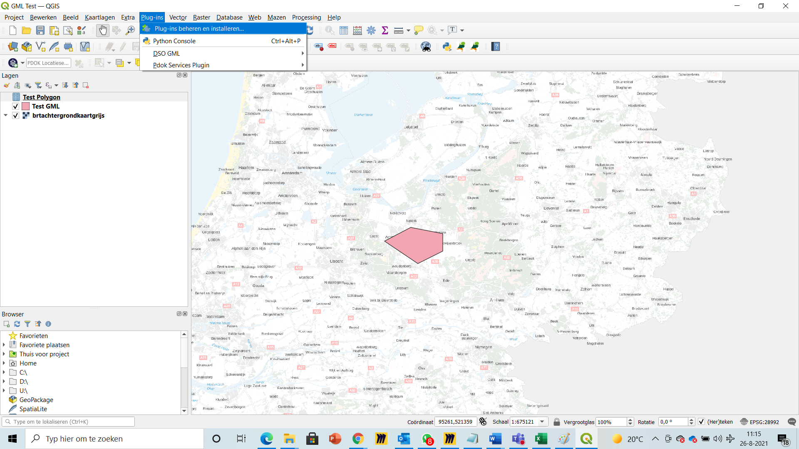
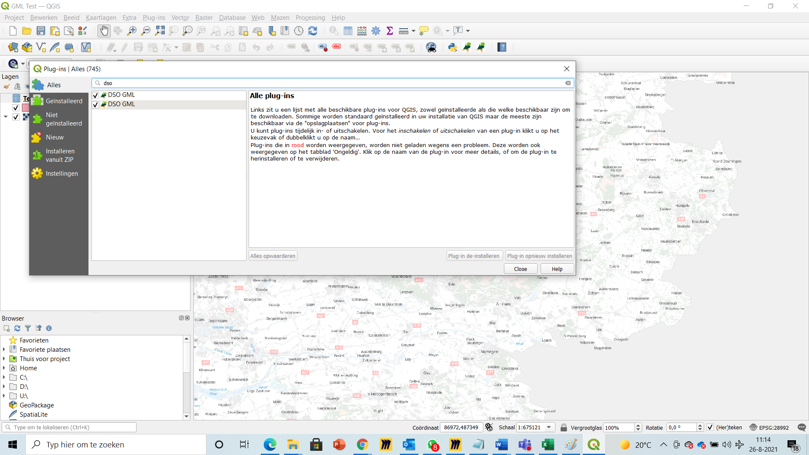
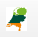

Deze Installatiehandleiding is gebaseerd op versie 1.3.0 van de STOP standaard en versie 1.1 van de plug-in.
Uitgangspunten voor het installeren van de plug-in:
Versie 3.18 of later van QGIS is geïnstalleerd.
Toegang tot de ‘GitHub / Geonovum / dso_gio_qgis_plugin’ repository of het via de GeoNovum website geleverde zip-bestand waarin de plug-in, documentatie en supportbestanden te vinden zijn.
QGIS biedt niet voor alle typen polygonen die voor kunnen komen in een GML ondersteuning. De GML’s die gebruiken worden in GIO’s zijn daardoor niet altijd direkt in QGIS bruikbaar. Om ze wél zichtbaar en bruikbaar te maken (in ieder geval voor het RD stelsel) dient aan QGIS een .gfs (Google File System) bestand toegevoegd te worden voor het RD stelsel.
Open op GitHub de repository ‘GitHub / Geonovum / dso_gio_qgis_plugin’ en blader daarin naar de directory “GIO_gml”. Selecteer het bestand “GIO_gml_Locatie_RDNew.gfs” en kopiëer deze.
Ga vervolgens naar de eigen computer, en blader naar “C:\Program Files\<QGIS installatie directory>\apps\gdal\share\gdal”. Plak hierin het .gfs-bestand dat eerder uit de repository gekopiëerd is.
In deze zelfde directory is ook het bestand gml_registry.xml te vinden. Open dit bestand met Notepad of een XML editor en zie dat er diverse “namespaces” toegevoegd zijn. Voeg hieraan de volgende namespace definitie toe door deze te kopiëren en in het bestand te plakken:
-535305146050
<!-- Toevoeging voor leesbaar maken van GML's in GIO's -->
<namespace prefix="geo" uri="https://standaarden.overheid.nl/stop/imop/geo/" useGlobalSRSName="true">
<featureType elementName="Locatie" gfsSchemaLocation="GIO_gml_Locatie_RDNew.gfs"/>
</namespace>
<!-- Toevoeging voor leesbaar maken van GML's in GIO's -->
<namespace prefix="geo" uri="https://standaarden.overheid.nl/stop/imop/geo/" useGlobalSRSName="true">
<featureType elementName="Locatie" gfsSchemaLocation="GIO_gml_Locatie_RDNew.gfs"/>
</namespace>
Sla het bestand op.
Mocht QGIS actief zijn, sluit deze dan af en start de applicatie opnieuw.
Let op: Als QGIS opnieuw geïnstalleerd wordt, wordt er ook weer een nieuw gml_registry.xml bestand geplaatst die de bestaande versie overschrijft. In dat gevol moet deze namespace definitie opnieuw toegevoegd worden.
Open op GitHub de repository ‘GitHub / Geonovum / dso_gio_qgis_plugin’ en blader daarin naar de directory “dso_gml”. Selecteer alle bestanden, inclusief de folder “__pycache__” en kopiëer deze.
Ga vervolgens naar de eigen computer, en blader naar de QGIS plug-in directory “C:\Users\<inlognaam>\AppData\Roaming\QGIS\QGIS3\profiles\default\python\plugins” (let op, bij een Nederlandse versie van Windows is “Users” vaak vervangen door “Gebruikers”).
Maak binnen deze plug-in folder een nieuwe folder aan met de naam “dso_gml”.
Blader nu naar de nieuwgemaakte folder “C:\Users\hvanhulten\AppData\Roaming\QGIS\QGIS3\profiles\default\python\plugins\dso_gml” en plak daarin alle bestanden die uit de repository gekopiëerd waren.
Start de applicatie QGIS op de gebruikelijke manier.
In de menubalk, kies de optie “Plug-ins” en daarbinnen “Plug-ins beheren en installeren…”
Hierdoor verschijnt het Plug-ins venster.
Kies in dit venster aan de linkerzijde de optie “Alles” waardoor een lijst met alle op de computer aanwezige plug-ins getoond wordt. Zoek in de lijst naar “DSO_GML” en plaats er een vinkje voor.
Let op: Als al een andere versie van de DSO_GML plug-in geinstalleerd is, dan blijft deze staan (zoals in de bovenstaande figuur te zien is). Verschillende versies kunnen naast elkaar geïnstalleerd en actief zijn.
Sluit de Plug-in Manager nu af.
Sluit ook QGIS af en start de applicatie opnieuw.
Na de herstart van QGIS is er een icoon in de vorm van een Nederlands landkaartje toegevoegd in de “Werkbalk Plug-ins”.
Door hierop te klikken wordt de Plug-in geaciveerd.
Voor een beschrijving hoe de plug-in te gebruiken is, wordt verwezen naar de laatste versie van de “Gebruikershandleiding QGIS plug-in in DSO GML” welke in dezelfde GitHub repository te vinden is.